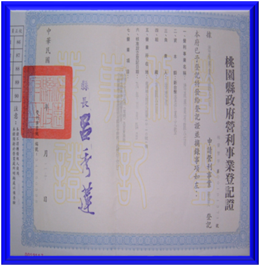
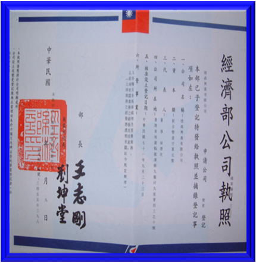
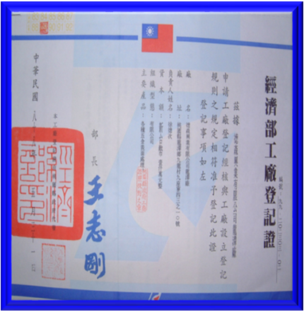
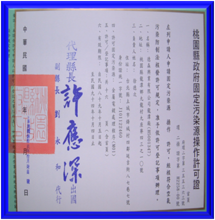
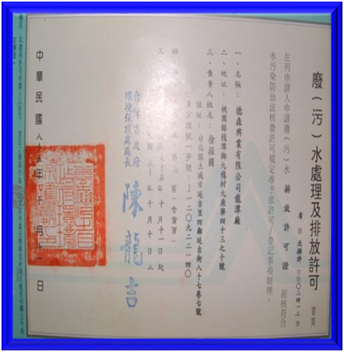
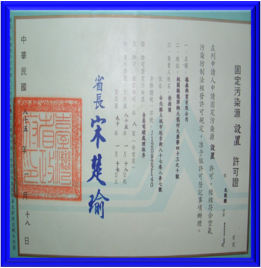

Profit Business Registration Certificate

Certificate of Incorporation

Factory of Registration Certificate

Operation License of Stationary source

Sweage Treament and discharge permission

Permission of Stationary Source Installation